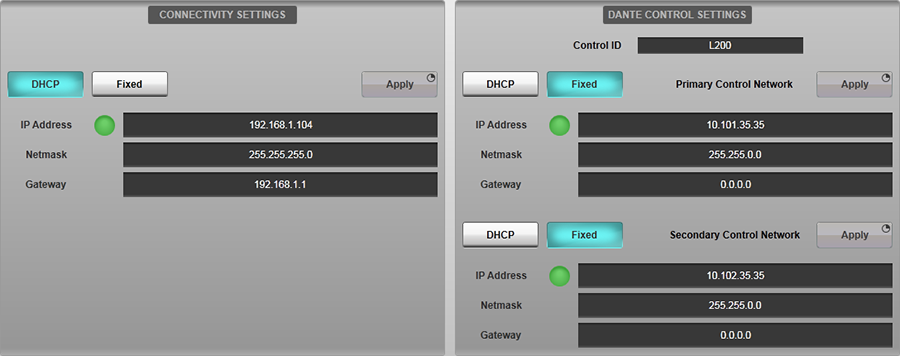
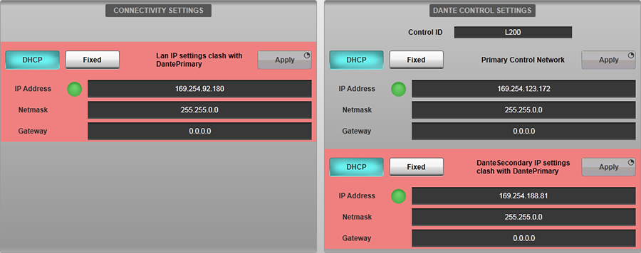
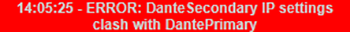
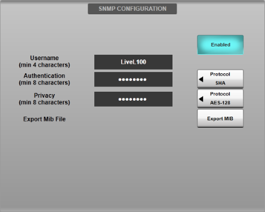
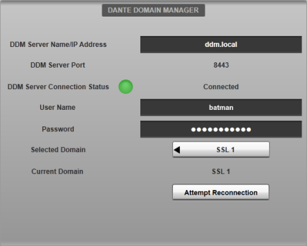

The Options can be found in MENU > Setup > Options.
The following pages detail the settings in each Options tab:
CONSOLE Options
SYSTEM Options
SURFACE Options
USER Options
USER KEYS Options
REMOTE Options
NETWORK Options (this page)
DAW Options
External Control Options
Network Options
These settings relate to the console's local network and Dante IP configuration.
Network Options are found in MENU > Setup > Options > NETWORK tab.

This page contains IP settings for the following console network devices:
Connectivity Network
Used for remote control of the console via SOLSA, the Remote Expander, another SSL Live console or TaCo. Also used to communicate with DAWs and other ipMIDI devices. This network is accessed from one of the three ports labelled NETWORK on the rear of the console.
To connect a device to the Connectivity network, that device must have an IP address in the same subnet as the subnet listed for the Connectivity network on this page.
Primary Dante Control - Provides the primary connection for control over the Dante network including making/unmaking routes and controlling input parameters such as mic gain.
Secondary Dante Control - Provides the secondary connection for control over the Dante network.
To use Dante on the console, the primary and secondary IP addresses of the console's Dante Control must be in the same subnets as the other devices on the Dante network. The primary and secondary Dante networks must have different subnets.
All three of the console's network devices (Connectivity network, Dante Primary Control and Dante Secondary Control) must all have IP addresses in different subnets.
Select DHCP or Fixed for each network as appropriate. Double tapping on any IP Address, Netmask or Gateway fields brings up the on-screen keyboard for fixed address entry. When the correct settings have been entered, press and hold Apply.
Note that the on-screen green LED shows a network is connected, but it does not show that the IP settings are correct.
Please Note: If any of these console network devices are set to DHCP and there is no DHCP server on that network, the IP address will be auto-configured within the 169.254.x.x subnet. If more than one of these console network devices are set to DHCP and there are no DHCP servers on those networks, those network devices will all be auto-configured with an IP address within the 169.254.x.x subnet. This will link the networks, which is an invalid configuration. For this reason, SSL recommends that a Fixed IP address is used if a DHCP server is not available.For more information on Dante IP configuration please see Setting Up Dante.
For more information on connecting remote surfaces or TaCo to the Connectivity network please see Remote Surfaces and TaCo Tablet Control.
IP Address Clash Warnings
IP Address clash warnings have been added to the Network Options (MENU > Setup > Options > NETWORK tab) to notify of when multiple network adapters on the console have IP addresses within the same subnet.
The adapters with IP addresses that need changing will be highlighted in red.

A status message will also appear.

And a network error icon will appear in the status bar.
The warnings will appear when an adapter's IP address is changed to within the same subnet as another adapter. If these warning messages appear, the current configuration of the console's network adapters is invalid and the IP addresses of the appropriate network adapters must be changed to resolve the clashes.
The warnings are organised by priority in the following order:
- Dante Control Primary
- Dante Control Secondary
- Connectivity Network
So for example, if the IP address of the Connectivity adapter was set within the 169.254.x.x subnet, and the user also set Dante Control Primary's IP address within the 169.254.x.x subnet, the warning would appear on the Connectivity adapter, as it is lower priority.
When the IP address clash has been resolved, the network error icon will disappear and the following status message will appear:
SNMP Logging
Simple Network Management Protocol (SNMP) is a protocol for logging information about devices on a network. An external SNMP 'manager' service must be present on the console's Connectivity network to use this feature.

Configure the console's SNMP agent service by filling in the Username, Authentication and Privacy fields, noting the minimum character length for each.
Define the Authentication and Privacy encryption schemes using the Protocol buttons to the right of each field.
To start the console's SNMP agent service engage the Enabled button in the SNMP Configuration section. Disengage the button to stop the service.
Use the Export MIB button to export a 'MIB' file containing the parameters exposed by the console when SNMP is enabled. This can be imported into the SNMP manager's database for ease of configuration.
The console will report the status of:
- Console's Connectivity network status
- Console's Dante Primary network status
- Console's Dante Secondary network status
Dante Domain Manager Login
The console is capable of connecting to a managed domain within a network controlled by Dante Domain Manager (DDM). The console must be logged into the same domain as any I/O devices you wish to route to/from or control.
Important Note: The console's Local Dante Expander (Brooklyn II) module and any BLII or X-Light Bridges must be enrolled in to the same domain as the I/O and console's control software. This is done using Dante Domain Manager.To connect the console to a Dante Domain Manager server, enter its IP address or host name into the DDM Sever Name/IP Address field. Enter the DDM User Name and Password into the fields provided. The DDM Server Connection Status indicator will flash green while connecting then turn solid green when connected to the DDM server successfully.
Note: The DDM user account must have routing capabilities, therefore set as "Operator" or "Administrator" roles in the domain being used. This is configured in DDM.Use the Selected Domain section to select from a list of domains configured on the DDM server. Any I/O devices not enrolled in a specific domain are automatically placed into the <unmanaged> domain for discovery, routing and control. It is recommended that devices are enrolled in a domain if DDM is configured on a network. It is advised that the console is rebooted after changing DDM settings.
The Current Domain field displays the name of the domain the console is currently in. This may differ from the Selected Domain if permissions on the DDM server change that cause the console to be removed from the Selected Domain.

If connection to a DDM domain has failed, the console will automatically re-attempt connection a number of times. However, a manual reconnection can be attempted (e.g. after verifying correct credentials) by using the Attempt Reconnection button.
Useful Links
CONSOLE OptionsSYSTEM Options
SURFACE Options
USER Options
USER KEYS Options
REMOTE Options
DAW Options
EXTERNAL CONTROL Options
Setting Up Dante
Index and Glossary